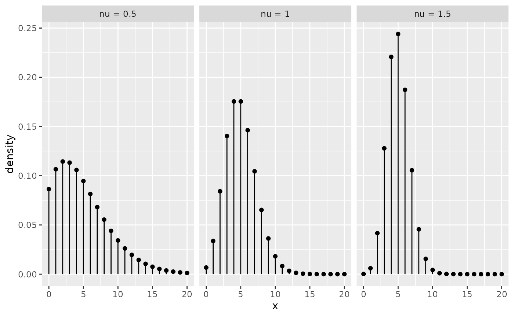
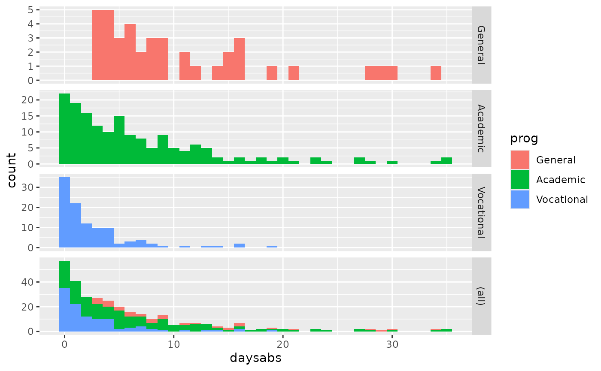
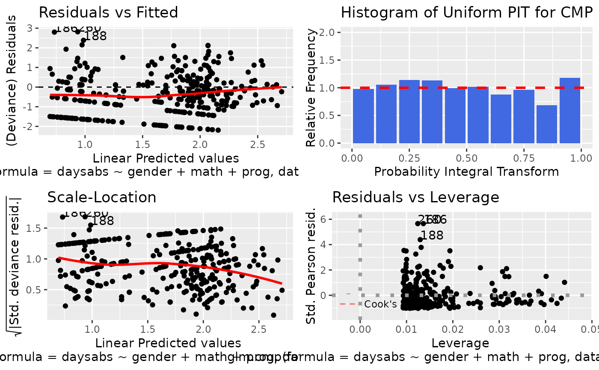
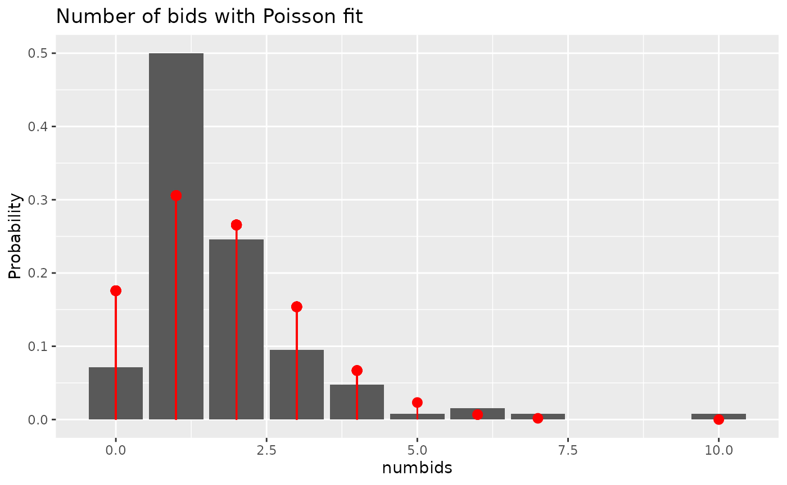

Getting Started with the `mpcmp` package
Thomas Fung, Aya Alwan, Justin Wishart and Alan Huang
2026-09-15
Source:vignettes/mpcmp.Rmd
mpcmp.RmdIntroduction
Conway–Maxwell–Poisson (CMP or COM-Poisson) distributions have seen a recent resurgence in popularity for the analysis of dispersed counts (e.g., Shmueli et al. (2005); Lord et al. (2008); Lord et al. (2010); Sellers and Shmueli (2010); Sellers and Premeaux (2020)). Key features of CMP distributions include the ability to handle both over- and under-dispersion while containing the classical Poisson distribution as a special case. See the corresponding Wikipedia page for a quick summary or Shmueli et al. (2005) for a more detailed overview of the history, features and applications of CMP distributions.
The R (R Core Team (2020))
mpcmp package of Fung et al.
(2020) provides the functionality for estimating a
mean-parametrized Conway-Maxwell-Poisson generalized linear models for
dispersed count data. The package is available from the Comprehensive R
Archive Network (CRAN) here. Huang (2017) provides the theoretical
development of the model that this package bases on.
Conway-Maxwell-Poisson Distributions
The CMP distribution was first used by Conway and Maxwell (1962) as a model for a queuing system with dependent service times. A random variable is said to have a (standard) CMP distribution with rate parameter and dispersion parameter if its probability mass function (pmf) is given by where is a normalizing constant. The CMP includes Poisson (), geometric (, ) and Bernoulli ( with probability ) as its special cases.
One of the major limitations of CMP distributions is that it is not directly parametrized via the mean as it does not have closed-form expression for its moments in terms of the parameters and . For the first two moments, approximations can be obtained as and they can be particularly accurate for or (see Shmueli et al. (2005)). If , CMP is overdispersed. In reverse, CMP is underdispersed when . Here is a plot of the density for a few CMP distributions with mean :

Conway-Maxwell-Poisson Generalized Linear Models
As CMP is one of a few distributions that can handle both under- and over-dispersion, the aim is to extend the GLM formulation to the CMP case so that one can model the relationship between and the predictors . Given a set of covariates , Sellers and Shmueli (2010) proposed a GLM for count response that can be specified via where is a vector of regression coefficients. This model, however, does not provide a closed-form relationship between and the linear predictor, making it incompatible with other commonly used log-linear models.
As it is more convenient and interpretable to model the mean of the distribution directly, Huang (2017) proposed to parametrize the CMP distribution via the mean: where the rate is defined as the solution to the mean constraint: We shall denote this as CMP distribution to distinguish it from the original/standard one.
A GLM that based on CMP can then be specified via where Note that GLM that based on CMP is a genuine GLM, so all the familiar key features of GLMs (e.g., McCullagh and Nelder (1989), Chapter 2) are retained.
The mean-dispersion specification makes CMP directly comparable and compatible other commonly used log-linear regression models for counts. In particular, the mean is functionally independent of the dispersion parameter , making it similar in structure to the familiar Negative Binomial regression model for overdispersed counts.
The model can also be extended to allow varying dispersion, i.e. itself is modelled via a regression: where is some covariates.
The mpcmp package
The main modelling function in our mpcmp package is
glm.cmp(). The optimisation is done using Fisher Scoring
updates to take advantage of the fact the
CMP
belongs to the exponential family. Notice that this is a constrained
optimisation problem as we have to maintain mean constraints at all
times, which makes the implementation is a bit more challenging.
The package implements similar methods to those related to
glm objects. If you used glm() previously, you
should feel right at home. Once a fitted model object has been obtained,
there are assessor functions available to extract the coefficients
(coef(), or its alias coefficients()), the
fitted values (fitted() or its alias
fitted.values()), the residuals (residuals()
or its alias resid()), the model frame
(model.frame()), the number of observations (nobs()), the
log-likelihood (logLik()), and the AIC
(AIC()).
You can also use plot() or autoplot() to
obtain diagnostic plots of the fitted model.
Let’s go through some examples to show you what our package can do!
Constant Overdispersion Example: attendance
The attendance dataset (originally from https://stats.idre.ucla.edu/r/dae/negative-binomial-regression/)
examines the relationship between the number of days absent from school
and the gender, maths score and academic program of 314 students from
two urban high schools.
library(mpcmp)
data(attendance)
library(ggplot2)
ggplot(attendance, aes(daysabs, fill = prog)) +
geom_histogram(binwidth = 1) +
facet_grid(prog ~ ., margins = TRUE, scales = "free")
It appears students enrolled into the General program tend to miss
more days of school than those enrolled into the Academic or the
Vocational program. There is some overdispersion in this dataset. We can
use glm.cmp() to fit the mean-parametrized CMP model to try
to account for that overdispersion.
M.attendance <- glm.cmp(daysabs ~ gender + math + prog, data = attendance)
summary(M.attendance)
#>
#> Call: glm.cmp(formula = daysabs ~ gender + math + prog, data = attendance)
#>
#> Deviance Residuals:
#> Min 1Q Median 3Q Max
#> -2.1925 -1.1166 -0.3973 0.2964 2.8154
#>
#> Linear Model Coefficients:
#> Estimate Std.Err Z value Pr(>|z|)
#> (Intercept) 2.714645 0.190407 14.257 < 2e-16 ***
#> gendermale -0.214720 0.117148 -1.833 0.06682 .
#> math -0.006323 0.002386 -2.650 0.00804 **
#> progAcademic -0.425322 0.169525 -2.509 0.01211 *
#> progVocational -1.253895 0.189478 -6.618 3.65e-11 ***
#> ---
#> Signif. codes: 0 '***' 0.001 '**' 0.01 '*' 0.05 '.' 0.1 ' ' 1
#>
#> (Dispersion parameter for Mean-CMP estimated to be 0.02024)
#>
#>
#> Null deviance: 455.83 on 313 degrees of freedom
#> Residual deviance: 377.44 on 309 degrees of freedom
#>
#> AIC: 1739.026As mpcmp is directly comparable and compatible with
other commonly used log-linear regression models for counts,
interpreting parameters is straight forward. Our model estimates that
students in the General program (the reference level) are expected to
miss exp(+1.254) = 3.5 times more days of school compared to students in
the Vocational program.
To see whether a simpler Poisson model,
i.e.
is adequate, we can run the model through the LRTnu()
function:
LRTnu(M.attendance)
#>
#> Likelihood ratio test for testing nu = 1
#>
#> data: M.attendance
#> LR statistic = 903, df = 1, p-value < 2.2e-16
#> sample estimates:
#> log-lik for Mean-CMP log-lik for Poisson
#> -864 -1320As the P-value is small, we conclude that dispersion is present in this data set.
One of the key features of the mpcmp package is that it
provides a range of diagnostic plots.
autoplot(M.attendance)
Please refer to ?autoplot to see what diagnostic plots
are available for a cmp class object.
The mpcmp package also supports broom
tidier method.
tidy(M.attendance)
#> # A tibble: 5 × 5
#> term estimate std.error statistic p.value
#> <chr> <dbl> <dbl> <dbl> <dbl>
#> 1 (Intercept) 2.71 0.190 14.3 4.05e-46
#> 2 gendermale -0.215 0.117 -1.83 6.68e- 2
#> 3 math -0.00632 0.00239 -2.65 8.04e- 3
#> 4 progAcademic -0.425 0.170 -2.51 1.21e- 2
#> 5 progVocational -1.25 0.189 -6.62 3.65e-11This means “cmp” objects can take advantage of any packages that
required broom support such as the
modelsummary package:
M_poisson <- glm(daysabs ~ gender + math + prog, data = attendance, family = poisson)
M_nb <- MASS::glm.nb(daysabs ~ gender + math + prog, data = attendance)
modelsummary::modelsummary(list(
mpcmp = M.attendance,
Poisson = M_poisson,
Neg.Bin = M_nb
))| mpcmp | Poisson | Neg.Bin | |
|---|---|---|---|
| (Intercept) | 2.715 | 2.759 | 2.707 |
| (0.190) | (0.064) | (0.204) | |
| gendermale | -0.215 | -0.242 | -0.211 |
| (0.117) | (0.047) | (0.122) | |
| math | -0.006 | -0.007 | -0.006 |
| (0.002) | (0.001) | (0.002) | |
| progAcademic | -0.425 | -0.426 | -0.425 |
| (0.170) | (0.057) | (0.182) | |
| progVocational | -1.254 | -1.271 | -1.253 |
| (0.189) | (0.078) | (0.200) | |
| Num.Obs. | 314 | 314 | 314 |
| AIC | 1739.0 | 2640.2 | 1740.3 |
| BIC | 1761.5 | 2658.9 | 1762.8 |
| Log.Lik. | -863.513 | -1315.089 | -864.154 |
| F | 104.321 | 17.860 | |
| RMSE | 6.34 | 6.34 |
We also implemented a bunch of commonly used methods for “cmp” objects:
methods(class = "cmp")
#> [1] AIC augment autoplot coef confint
#> [6] cooks.distance fitted glance hatvalues influence
#> [11] logLik model.frame model.matrix nobs plot
#> [16] predict print residuals rstandard summary
#> [21] tidy update vcov
#> see '?methods' for accessing help and source codeConstant Underdispersion Example: takeoverbids
One of the key strength of the CMP distribution is that it can handle underdispersion. Here is an example demonstrating that. A dataset from Cameron and Johansson (1997) that gives the number of bids received by 126 US firms that were successful targets of tender offers during the period 1978-85. The dataset comes with a set of explanatory variables such as defensive actions taken by management of target firm, firm-specific characteristics and intervention by federal regulators.
If we fit a Poisson distribution to the marginal distribution of the number of bids, we have:
data("takeoverbids")
ggplot(takeoverbids) +
geom_bar(aes(x = numbids, y = ..count.. / sum(..count..))) +
geom_pointrange(
aes(
x = numbids,
y = dpois(numbids, mean(numbids)),
ymin = 0,
ymax = dpois(numbids, mean(numbids))
),
colour = "red"
) +
labs(title = "Number of bids with Poisson fit", y = "Probability")
#> Warning: The dot-dot notation (`..count..`) was deprecated in ggplot2 3.4.0.
#> ℹ Please use `after_stat(count)` instead.
#> This warning is displayed once per session.
#> Call `lifecycle::last_lifecycle_warnings()` to see where this warning was
#> generated.
We can see that the response variable is more concentrated than a Poisson fit, which is a sign of underdispersion.Here, we can use glm.cmp() to fit the mean-parametrized
CMP model to try to account for that underdispersion.
M.bids <- glm.cmp(numbids ~ leglrest + rearest + finrest + whtknght
+ bidprem + insthold + size + sizesq + regulatn, data = takeoverbids)
tidy(M.bids)
#> # A tibble: 10 × 5
#> term estimate std.error statistic p.value
#> <chr> <dbl> <dbl> <dbl> <dbl>
#> 1 (Intercept) 0.990 0.435 2.27 0.0230
#> 2 leglrest 0.268 0.123 2.18 0.0292
#> 3 rearest -0.173 0.155 -1.12 0.263
#> 4 finrest 0.0677 0.174 0.388 0.698
#> 5 whtknght 0.481 0.132 3.65 0.000258
#> 6 bidprem -0.685 0.308 -2.23 0.0260
#> 7 insthold -0.368 0.347 -1.06 0.289
#> 8 size 0.179 0.0476 3.77 0.000166
#> 9 sizesq -0.00758 0.00248 -3.05 0.00228
#> 10 regulatn -0.0376 0.130 -0.288 0.773
LRTnu(M.bids)
#>
#> Likelihood ratio test for testing nu = 1
#>
#> data: M.bids
#> LR statistic = 9.72, df = 1, p-value = 0.001821
#> sample estimates:
#> log-lik for Mean-CMP log-lik for Poisson
#> -180 -185From the likelihood ratio test, we can see that the dispersion parameter is significantly different to 1, suggesting the model is trying to account for that underdispersion.
We can also compare the results with a Poisson model.
M.bids.pois <- glm(
numbids ~ leglrest + rearest + finrest + whtknght
+ bidprem + insthold + size + sizesq + regulatn,
data = takeoverbids,
family = poisson
)
modelsummary::modelsummary(list(mpcmp = M.bids, Poisson = M.bids.pois),
statistic_vertical = FALSE, stars = TRUE
)
#> Warning: The `statistic_vertical` argument is deprecated and will be ignored.
#> To display uncertainty estimates next to your coefficients, use a `glue` string
#> in the `estimate` argument. See `?modelsummary`| mpcmp | Poisson | |
|---|---|---|
| + p < 0.1, * p < 0.05, ** p < 0.01, *** p < 0.001 | ||
| (Intercept) | 0.990* | 0.986+ |
| (0.435) | (0.534) | |
| leglrest | 0.268* | 0.260+ |
| (0.123) | (0.151) | |
| rearest | -0.173 | -0.196 |
| (0.155) | (0.193) | |
| finrest | 0.068 | 0.074 |
| (0.174) | (0.217) | |
| whtknght | 0.481*** | 0.481** |
| (0.132) | (0.159) | |
| bidprem | -0.685* | -0.678+ |
| (0.308) | (0.377) | |
| insthold | -0.368 | -0.362 |
| (0.347) | (0.424) | |
| size | 0.179*** | 0.179** |
| (0.048) | (0.060) | |
| sizesq | -0.008** | -0.008* |
| (0.002) | (0.003) | |
| regulatn | -0.038 | -0.029 |
| (0.130) | (0.161) | |
| Num.Obs. | 126 | 126 |
| AIC | 382.2 | 389.9 |
| BIC | 413.4 | 418.3 |
| Log.Lik. | -180.088 | -184.948 |
| F | 3.755 | |
| RMSE | 1.22 | |
If we compare the two models, we can see that the
CMP
model fitted the data better. We can also see that all the estimated
standard errors under
CMP
model are smaller which in turn makes the p-values for both
leglrest and bidprem to drop below 0.05
instead of 0.1 under the Poisson model.
Varying Dispersion Example: sitophilus
Ribeiro et al. (2013) carried out an
experiment to assess the bioactivity of extracts from different parts
(seeds, leaves and branches) of Annona mucosa (Annonaceae) to control
Sitophilus zeamaus (Coleoptera: Curculionidae), a major pest of stored
maize/corn in Brazil. This dataset can be found as part of the
cmpreg package of Elias Ribeiro
Junior (2020).
In this experiment:
- 10g of corn and 20 animals adults were placed in each Petri dish.
- Extracts prepared with different parts of mucosa or just water (control) were completely randomised with 10 replicates.
- The numbers of emerged insects (progeny) after 60 days were recorded and some descriptive statistics can be found below.
library(tidyverse)
data(sitophilus)
sitophilus %>%
group_by(extract) %>%
summarise(
mu = mean(ninsect),
sigma2 = var(ninsect)
)
#> # A tibble: 4 × 3
#> extract mu sigma2
#> <fct> <dbl> <dbl>
#> 1 Control 31.5 62.5
#> 2 Leaf 31.3 94.0
#> 3 Branch 29.9 88.8
#> 4 Seed 1.1 1.66It appears that the treatment may have some impact on both the mean
and the variance of the number of progeny. Recall that non-constant
variance is the norm in a GLM, non-constant variances do not necessarily
mean varying dispersions. Nonetheless, we will try to use the treatment
to explain the dispersion in the data set. To do that we specify the
formula_nu argument in the glm.cmp()
function.
data(sitophilus)
M.sit <- glm.cmp(formula = ninsect ~ extract, formula_nu = ~extract, data = sitophilus)
summary(M.sit)
#>
#> Call: glm.cmp(formula = ninsect ~ extract, formula_nu = ~extract, data = sitophilus)
#>
#> Deviance Residuals:
#> Min 1Q Median 3Q Max
#> -2.21084 -1.16849 0.07494 0.64152 1.72653
#>
#> Mean Model Coefficients:
#> Estimate Std.Err Z value Pr(>|z|)
#> (Intercept) 3.449988 0.077974 44.245 <2e-16 ***
#> extractLeaf -0.006369 0.122139 -0.052 0.958
#> extractBranch -0.052129 0.123387 -0.422 0.673
#> extractSeed -3.354677 0.362108 -9.264 <2e-16 ***
#> ---
#> Signif. codes: 0 '***' 0.001 '**' 0.01 '*' 0.05 '.' 0.1 ' ' 1
#>
#> Dispersion Model Coefficients:
#> Estimate Std.Err Z value Pr(>|z|)
#> (Intercept) -0.6652 0.4573 -1.455 0.146
#> extractLeaf -0.3831 0.6509 -0.589 0.556
#> extractBranch -0.3724 0.6514 -0.572 0.567
#> extractSeed -0.1176 1.5461 -0.076 0.939
#>
#> Null deviance: 257.211 on 39 degrees of freedom
#> Residual deviance: 41.679 on 32 degrees of freedom
#>
#> AIC: 260.8279From the model summary, we can see that there is not much evidence to suggest the dispersions are varying across treatment groups. We can also formally test whether a constant dispersion model is sufficient here using a likelihood ratio test as the two models are nested:
M.sit2 <- update(M.sit, formula_nu = NULL)
cmplrtest(M.sit, M.sit2)
#>
#> Likelihood ratio test for testing both COM-Poisson models are
#> equivalent
#>
#> data: M.sit vs. M.sit2
#> LR statistic = 0.439, df = 3, p-value = 0.9321As a result, our final model is
summary(M.sit2)
#>
#> Call: glm.cmp(formula = ninsect ~ extract, data = sitophilus)
#>
#> Deviance Residuals:
#> Min 1Q Median 3Q Max
#> -1.9515 -1.2310 0.0794 0.6255 1.6762
#>
#> Linear Model Coefficients:
#> Estimate Std.Err Z value Pr(>|z|)
#> (Intercept) 3.449988 0.088455 39.003 <2e-16 ***
#> extractLeaf -0.006369 0.125289 -0.051 0.959
#> extractBranch -0.052129 0.126712 -0.411 0.681
#> extractSeed -3.354677 0.372197 -9.013 <2e-16 ***
#> ---
#> Signif. codes: 0 '***' 0.001 '**' 0.01 '*' 0.05 '.' 0.1 ' ' 1
#>
#> (Dispersion parameter for Mean-CMP estimated to be 0.3957)
#>
#>
#> Null deviance: 234.470 on 39 degrees of freedom
#> Residual deviance: 41.408 on 36 degrees of freedom
#>
#> AIC: 253.2668Other packages for fitting Conway-Maxwell Poisson Model
There are other R packages to deal with CMP models, and
they all contribute to the writing and construction of this package.
-
compoisson: Routines for density and moments of the CMP distribution under original parametrization by Dunn (2012) -
CompGLM: Fit CMP models under original parametrization (includes dispersion modelling) by Pollock (2018). -
COMPoissonReg: Fit CMP models under original parametrization (includes zero-inflation and dispersion modelling) by Andrew Raim <andrew.raim@gmail.com> (2019). -
cmpreg: Fit Mean-type parametrized CMP models (includes dispersion modelling) by Elias Ribeiro Junior (2020). The authors purposed to regress on the approximated mean. -
DGLMExtPois: Fit mean-parametrized CMP model (includes dispersion modelling) usingnloptrby Saez-Castillo et al. (2020). -
glmmTMB: Fit (among other) CMP models under a different mean-parametrization (includes zero-inflation, dispersion modelling and random effects) by Brooks et al. (2017).